계정 6곳(Instagram·Threads·YouTube·TikTok·X·Facebook)이 열려 있고 아이콘은 클로버로 통일돼 있습니다. 그런데 Instagram 첫 화면은 고정 게시물 0개에 사물 사진만 보이고, 소개 4곳에는 아직 "만드는 중"이라고 적혀 있습니다(제품은 이미 운영 중). App Store·Google Play에는 해낼게 앱이 아직 없고, 앱 코드에는 아이콘 설정이 없습니다. 아래에서 칸마다 유지·개선·교체를 판정했고, 개선·교체 칸 5곳에 시안을 2안씩 냈습니다. 회장님이 고르실 것은 맨 아래 4개입니다.
출처: 앱 채널 PRD v0.2.0 핵심 가치 카드, one-thing.md(08-29 보정), 브랜드 전략 v0.3 §1~2, 결정 D-002·D-005·D-006·D-056. 브랜드 문서와 PRD가 다르면 PRD를 따랐습니다.
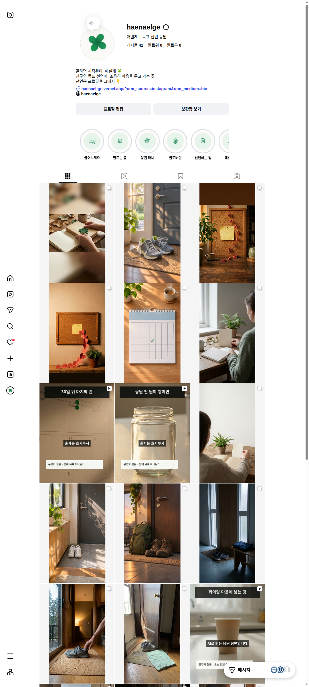
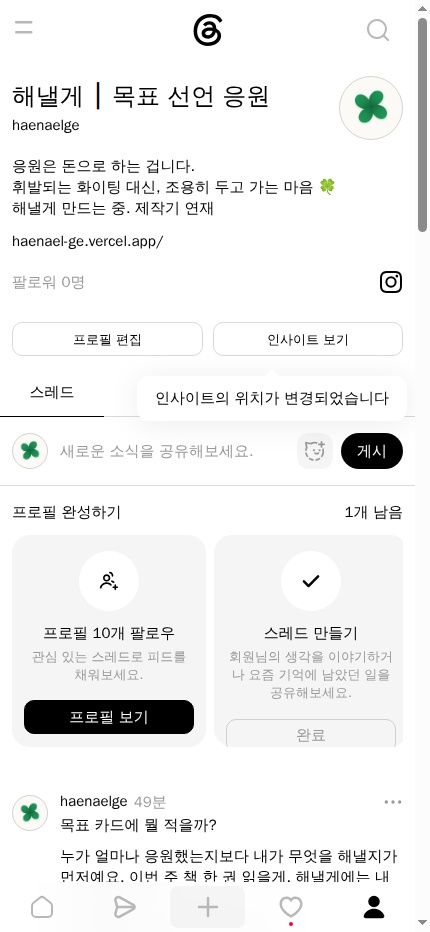
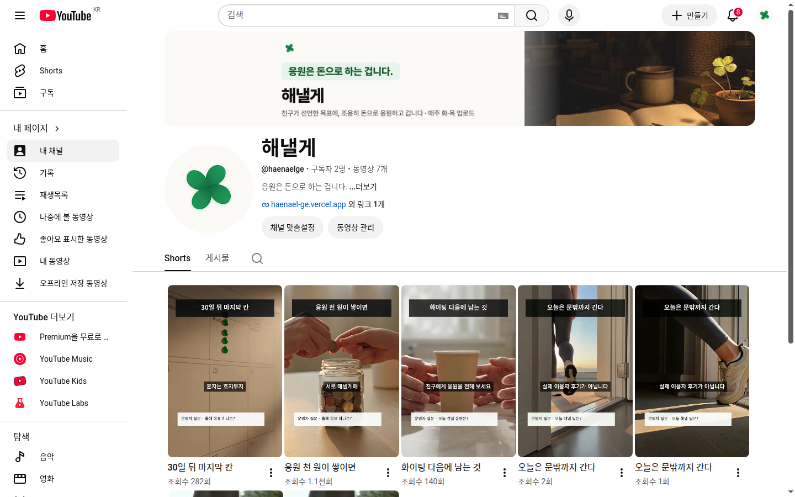
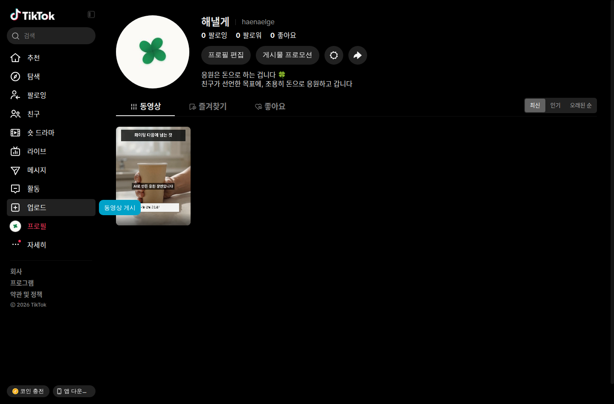
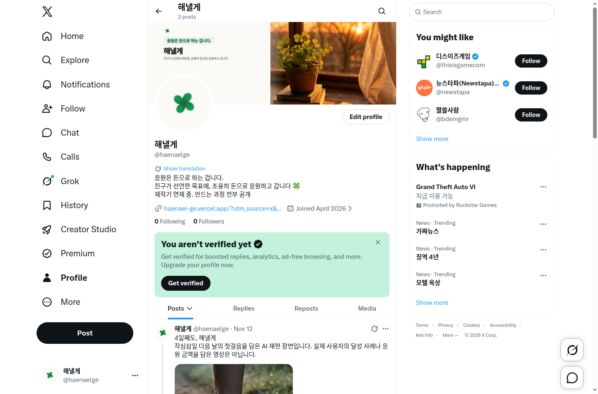
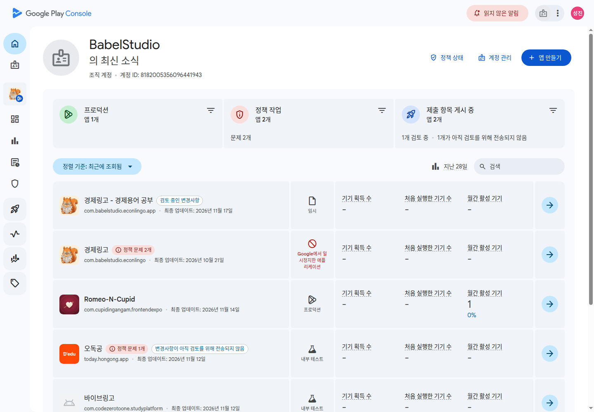
| 접점 | 칸 | 지금 | 판정 | 이유 |
|---|---|---|---|---|
| 공통 6채널 | 프로필 이미지 | 유지 | D-006 확정 마크. 6채널 모두 같은 마크(관찰). Facebook 은 10-05 캡처에서 사진 없음, 지금은 미확인 | |
| 이름 | 해낼게 ⏐ 목표 선언 응원 | 개선 | 이름 칸은 검색에 걸립니다. "응원"만으로는 LED 응원 앱과 섞입니다(Play 검색 관찰). 시안 S1 | |
| 소개 | 말하면 시작된다. 해낼게 🍀 / 친구의 목표 선언에, 조용히 마음을 두고 가는 곳 | 교체 | 클로버·돈·환전이 없어 무엇을 하는 곳인지 모릅니다. 치환 테스트 FAIL. 시안 S1 | |
| 링크 | 운영 주소 + utm_source=instagram | 유지 | 측정 태그 있음 | |
| 고정 게시물 | 0개 | 교체(신규) | 첫 화면 9칸이 신발·코르크판 사진뿐. 제품 화면이 한 장도 없습니다. 시안 S2 | |
| 하이라이트 6 | 물어보세요·만드는 중·응원 매너·클로버란·선언하는 법·해낼게란 | 개선 | 커버 디자인은 유지. "만드는 중"만 낡았습니다(운영 2.3.x). 시안 S5 | |
| 피드 그리드 | 실사 사물 사진 위주 | 개선(규칙만) | 발행은 OSMU·힉스필드 세션 몫. 규칙 제안: 3칸 중 1칸은 제품 화면 또는 클로버가 보이게 | |
| Threads | 소개 · 링크 | 응원은 돈으로 하는 겁니다… 해낼게 만드는 중. 제작기 연재 · 링크에 utm 없음 | 개선 | "만드는 중" 삭제, utm_source=threads 추가. 시안 S1 을 따름 |
| YouTube | 배너 | 슬로건 + "매주 화·목 업로드" | 개선 | 슬로건은 유지(D-005). 올리는 주기를 지키지 못하면 약속 문구는 뺍니다. 실제 업로드 주기는 미확인 |
| YouTube | 설명 | 응원은 돈으로 하는 겁니다. | 개선 | 한 줄뿐이라 무엇을 하는지 없음. S1 문장 재사용 |
| TikTok | 소개 · 링크 | 슬로건 + 한 줄 · 링크 없음 | 개선 | 소개는 거의 맞음. 링크 칸은 비즈니스 계정 전환이 필요한지 미확인 |
| X | 소개 | … 제작기 연재 중. 만드는 과정 전부 공개 | 개선 | "연재 중"인데 게시물 3개. S1 을 따름. 배너는 유지 |
| Facebook 페이지 | 사진·소개 | 10-05: 프로필 사진 없음 | 미확인 | 페이지 주소가 저장소에 없어 오늘 다시 열지 못했습니다. 광고 주체라 다음 턴에 확인 |
| 웹 (운영) | 제목 · 공유 이미지 | "해낼게 — 응원은 돈으로 하는 겁니다" · OG 1200×630 | 유지 | 첫 화면 동의 배너는 D-054 로 제품 세션이 없애는 중(범위 밖) |
| 앱 (iOS·Android) | 앱 아이콘 | app.config.ts 에 icon 설정 없음 · 원본 512px 뿐 | 교체(신규) | 이대로 빌드하면 Expo 기본 아이콘이 나갑니다. 스토어는 1024px 필요. 시안 S3 아이콘 |
| App Store | 이름·부제·설명·키워드·스크린샷 | App Store Connect 에 앱 없음(API 관찰) | 교체(신규) | D-056 로 출시 예정. 시안 S3·S4 |
| Google Play | 이름·짧은 설명·설명·그래픽·스크린샷 | Play Console 에 앱 없음(관찰) | 교체(신규) | 시안 S3·S4. 그래픽 이미지(1024×500)는 회장 선택 뒤 제작 |
| 앱인토스 | 이름·아이콘·소개·스크린샷 | 콘솔 로그아웃 상태라 못 봄 | 미확인 | 미니앱엔 환전이 없어 소개 문장이 웹·앱과 달라야 합니다. 수익화 방식(응원 아이템 또는 광고)이 정해진 뒤 씁니다 |
첫 줄에서 호불호를 가릅니다(긴장). 3줄이 곧 사용 순서입니다. 빌린 것: 투네이션 Instagram 소개가 "무엇을 하는 플랫폼"을 한 문장으로 먼저 적는 구조.
가격 단위가 첫 화면에 보입니다. 운영 웹 홈의 3단계 설명과 문장을 맞췄습니다. 슬로건은 빠지고 대신 P1 필러("휘발되는 화이팅")를 씁니다.
추천: A. 슬로건은 회장 확정 자산이고 경쟁사가 쓸 수 없는 문장입니다. B 의 1,000원 단위는 고정 게시물 2번에서 보여 줍니다.
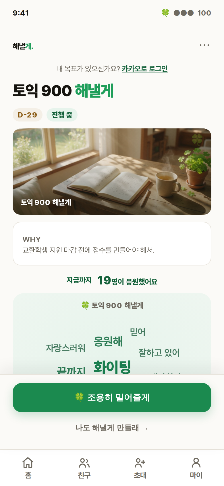
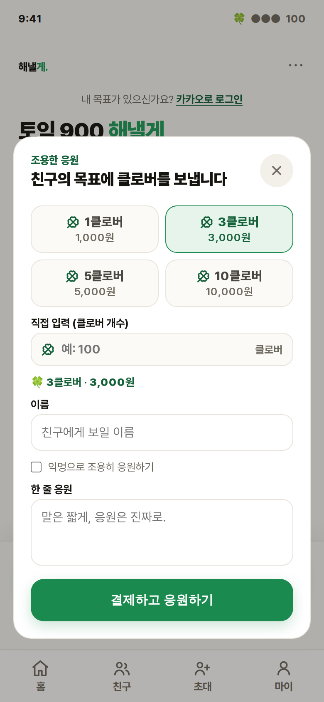
프로필에 온 사람이 3장으로 "뭐고, 어떻게, 응원하면 어떻게 되는지"를 끝냅니다. 그리드의 실사 사진들과 색이 달라 고정 3장이 눈에 띕니다. 3번 문장은 프로토타입 기준이고 운영 화면에서 금액 비노출은 다시 확인한 뒤 씁니다.
카피는 voice-copy-bank P1·P3·P2 그대로입니다. 지금 피드의 사진 톤과 이어집니다. 대신 제품 화면이 없어 "무엇을 누르는지"는 링크를 눌러야 압니다.
추천: A. 팔로워 0 단계에서 프로필 방문자는 광고·공유 링크로 온 사람이고, 그 사람이 막히는 곳은 "이게 뭔데"입니다. B 문장은 피드 게시물로 쓰는 게 더 맞습니다.
빌린 것: 챌린저스 Play 제목 "챌린저스 - 돈이 돌아오는 쇼핑 앱"(이름 + 돈 혜택 한 줄), 토스 Play 설명의 해요체 글머리표. "목표 응원" Play 검색 1쪽은 LED 전광판 앱뿐이고, "목표 선언" 검색은 플래너 앱뿐이라 "친구·클로버"를 붙여야 구분됩니다. 추천: A(이름에 검색어, 부제에 슬로건). 환전 문구가 Apple 심사에 걸리는지는 PRD v0.2.0 §3.3 판정을 따르고, 걸리면 iOS 만 "내 계좌로 받아요"를 뺍니다.
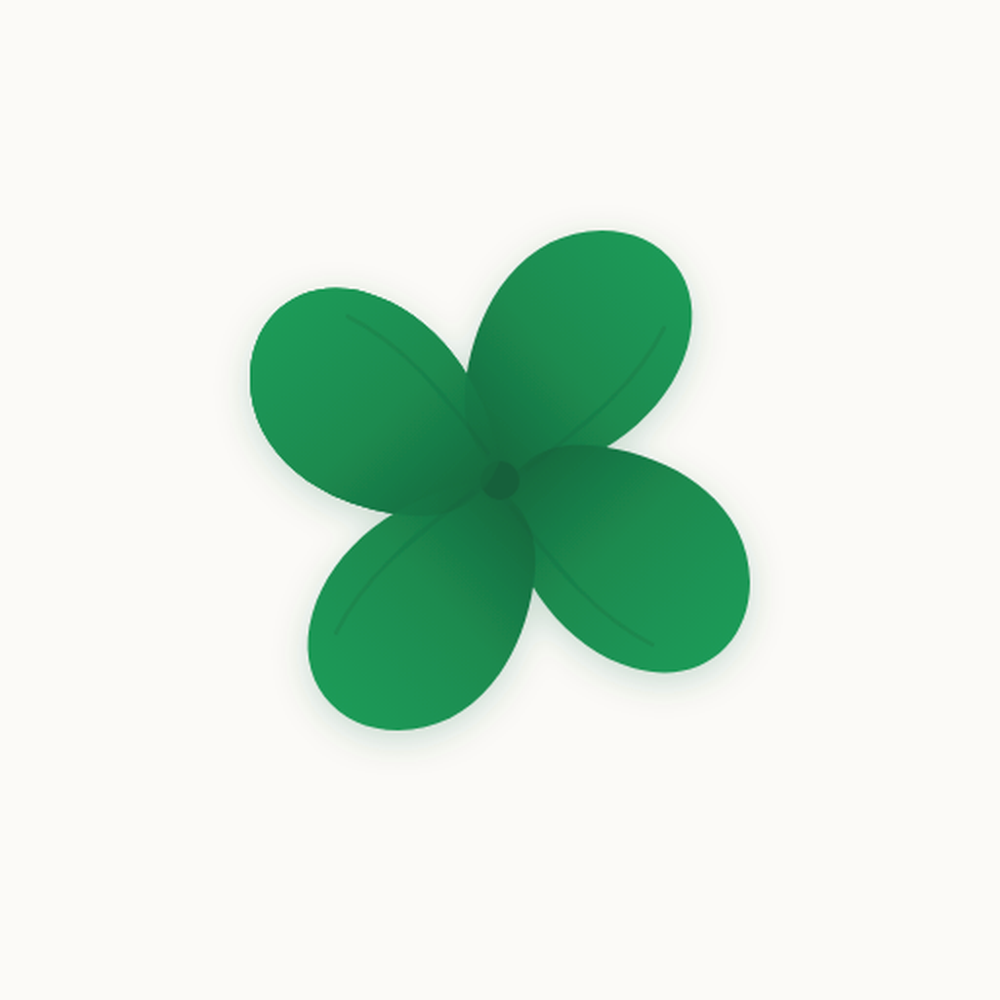
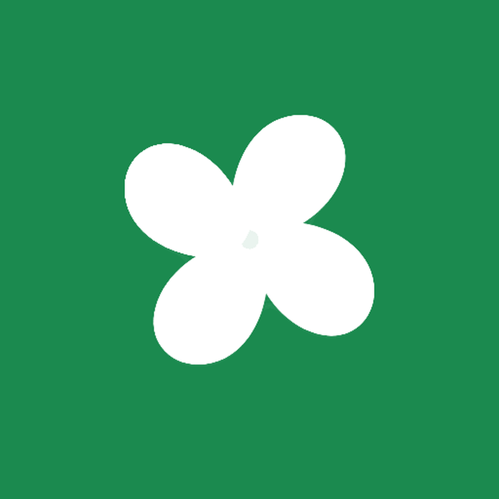
A 는 SNS 프로필과 똑같아 알아보기 쉽고, B 는 홈 화면의 흰 아이콘들 사이에서 눈에 띄며 앱인토스 기본색(#1B8A4F)과 맞습니다. 추천: B(앱 아이콘만, SNS 프로필은 A 유지). 둘 다 512px 원본을 늘린 시안이라 출고 전 1024px 원본을 다시 만들어야 합니다.
응원은
돈으로 하는 겁니다
친구는 클로버로
조용히 밀어줘요
모인 클로버는
내 계좌로
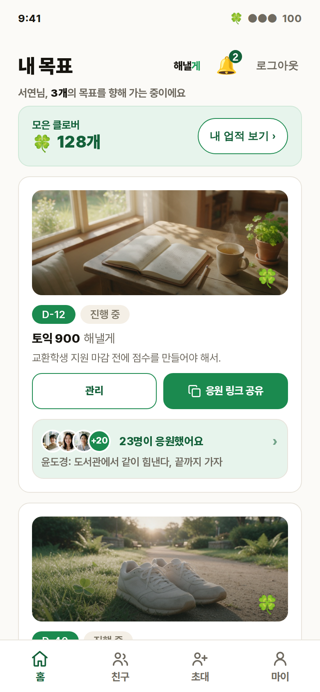
토스식 정보 우선. 작은 썸네일에서도 문장이 읽힙니다.
응원은
돈으로 하는 겁니다
친구는 클로버로
조용히 밀어줘요
모인 클로버는
내 계좌로
Instagram 피드의 따뜻한 실사 톤과 이어집니다. 사진 위 글씨라 작은 화면에서 대비가 약해질 수 있습니다.
화면은 승인 프로토타입 v3.1.1 캡처입니다. 앱 결제 시트(A12·A13)가 나오면 2번을 앱 화면으로 바꿉니다. 추천: A. 최종 출고는 store-visual-producer 가 규격(6.9인치 1320×2868, Play 1080×1920+)으로 만듭니다.
30클로버부터 환전 신청, 이용료, 입금까지 걸리는 시간을 3장으로. 받는 사람이 가장 많이 물을 질문입니다.
"친구한테 돈 받아도 괜찮아요?", "얼마부터 보내요?" 같은 망설임 질문 모음. 응원하는 사람의 마지막 의심을 풉니다.
추천: A. "물어보세요" 하이라이트가 이미 B 역할을 일부 합니다.
답장은 "1A 2A 3A·B 4A"처럼 주시면 됩니다. S5 하이라이트는 추천안 A 로 진행하겠습니다.
🏷 STAMP | line: growth | 생성: 2026-11-19 17:45 KST | model: claude-opus-5-5 | agent: 해낼게 그로스 세션(컨트롤러) | 근거: 실물 캡처 9342·9450(관찰), App Store Connect API(관찰), PRD 앱채널 v0.2.0, one-thing.md, brand-marketing-strategy v0.3, voice-copy-bank, D-002·D-005·D-006·D-054·D-056, 벤치마크 챌린저스·토스 Play 페이지, 투네이션 Instagram, Play 검색 "목표 응원"·"목표 선언" · 가장 오래 고민한 지점: 처음 온 사람에게 "돈"을 얼마나 일찍 보여 줄지. 슬로건이 이미 그 긴장을 맡고 있어 앞에 둠.